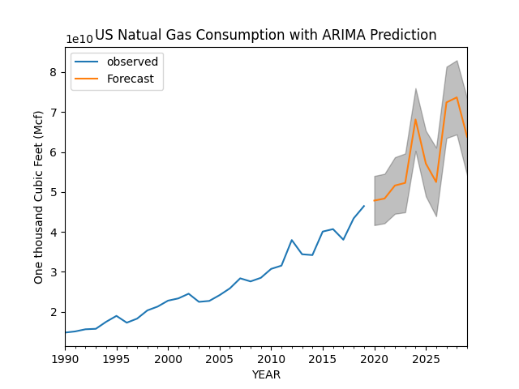

NRC Regions and Locations of plants. Source: Regions of the Nuclear Regulatory Commission (wikipedia)

The graphic above shows interesting trends in US power production and highlights US reliance on fossil fuels.

This graph depicts consumption of US fossil fuels. As clearly shown, reliance on Natural Gas has steadily increased over the past 30 years.
Using ARIMA for time series forecasting analysis, it is clear that Natual Gas consumption in the US is predicted to rise over the next 10 years. This increased dependence on fossil fuels could potentially be offset by switching to cleaner forms of energy such as Nuclear power.